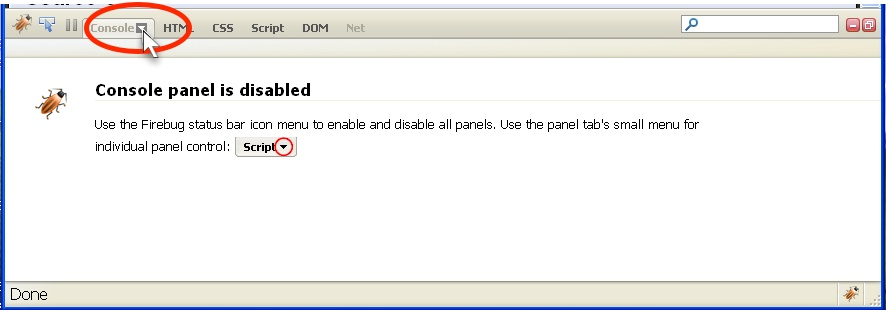

Learning Unit 2
Learning Unit 2When Things Go Wrong - Introducing Firebug
Here's how we're going to try to debug our JavaScript programs.
The Issue
JavaScript is not very good about telling us something is wrong. Look at this demo to see what I mean: Demo: What's Wrong?
Enabling Firebug
- Right-Click on the Firebug Icon
- Select the "On for All Web Pages" menu item.
- Click on the "Console" tab.
- Click on the little down-arrow in the "Console" tab.

- Select the "Enabled" menu item.
- Reload the page if it says this. (Press the F5 key, or Ctl-R.)
- The error will be displayed by Firebug.
- The Error is on the left.
- The line number of the error in your code is on the right.
- The Error indicator is at the bottom-right of the window.
- The Error indicator will show even if the Firebug is not open.
- Once Firebug is on, you shouldn't need to turn it on again. Look at the Firebug icon. If it's in color then Firebug is on.
Using Firebug's panel
- On the right side of the Firebug header bar are two buttons. The first one will minimize Firebug but it will still be running. This is the one we want to use.
- The second button will open Firebug in a new window. This is very nice if you have a bigger monitor
Let's Get Firebug Working
Here's the lab: Lab 1: Enabling Firebug
Learning Firebug Error Messages
Here is a demo of some JavaScript errors that you might see. Demo: Firebug Errors
Let's Practice Some More
Practice doesn't really make things perfect. Practice turns what you do a lot into a habit. Lab 2: Learning Firebug Error Messages